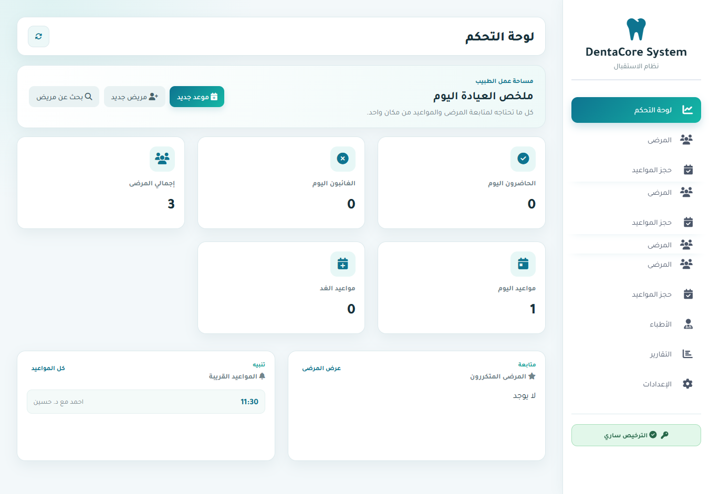
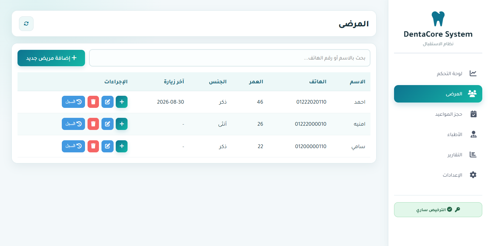
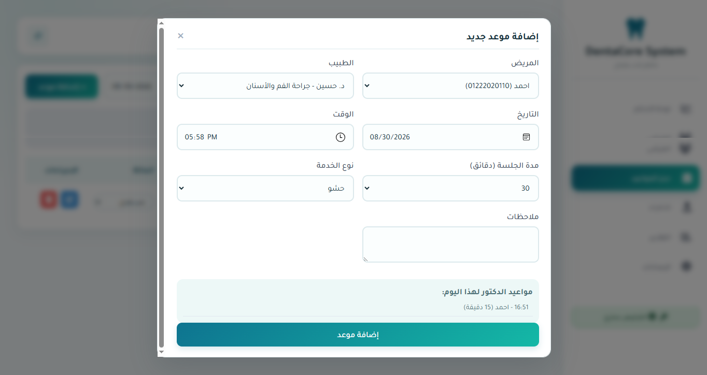
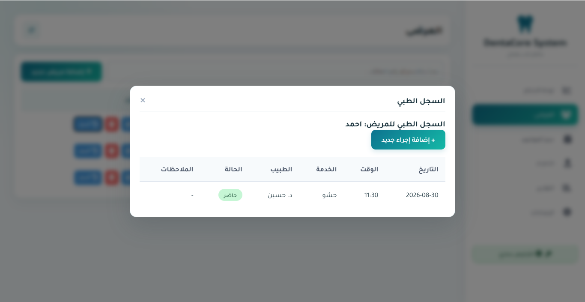
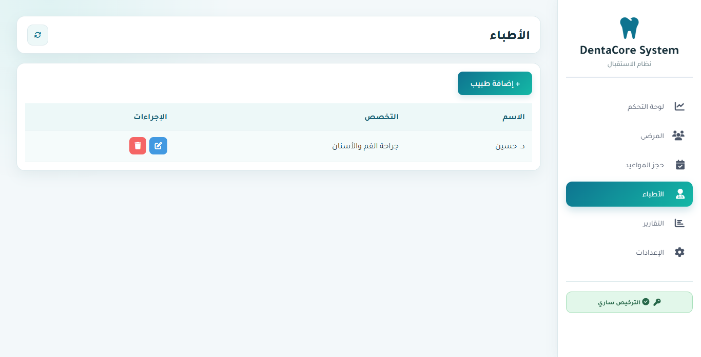
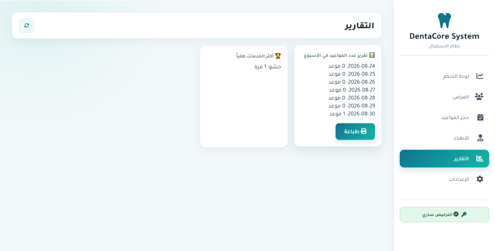
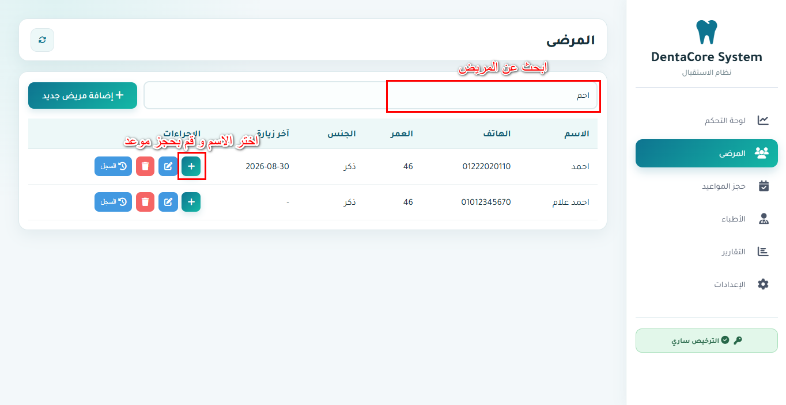

02
لوحة تحكم واضحة
تابع المواعيد والمرضى والتنبيهات القريبة من الشاشة الرئيسية.
صورة لوحة التحكمimages/dashboard.png
DentaCore يساعدك على إدارة المرضى والمواعيد والسجلات والتقارير من شاشة واحدة.

اعرض المواعيد والمرضى والسجلات من شاشة واضحة بدل البحث في ملفات متفرقة.

وظائف أساسية تساعدك على تنظيم العمل اليومي داخل العيادة.
تابع المواعيد والمرضى والتنبيهات القريبة من الشاشة الرئيسية.
أضف بيانات المرضى وابحث بالاسم أو الهاتف وافتح سجل المريض بسهولة.
أنشئ الموعد وحدد الطبيب والمدة، مع تنبيه عند وجود تعارض.

سجل الزيارات والإجراءات والملاحظات في ملف المريض.

احفظ بيانات الأطباء واربط كل موعد بالطبيب المناسب.

راجع ملخصات العمل واطبع التقارير عند الحاجة.


افتح لوحة التحكم، ابحث عن المريض، احجز الموعد، ثم حدّث السجل.
تعرّف على DentaCore وشاهد كيف يناسب طريقة عمل عيادتك.